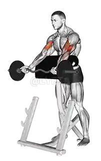

Esecuzione Curl alla scott

Cosa è il curl alla scott?
Il curl alla Scott con bilanciere è un esercizio di isolamento per i muscoli bicipiti. Viene svolto utilizzando una panca Scott (o panca per curl) e un bilanciere o bilanciere EZ. Questo esercizio è molto efficace per lavorare sui bicipiti, in particolare nella fase di contrazione. La panca Scott permette di mantenere una posizione stabile e ridurre l'uso di slanci, favorendo il controllo completo del movimento.
Come eseguirlo in modo corretto?
ecco come eseguirlo correttamente:
- Siediti sulla panca Scott, mantenendo le braccia completamente distese in avanti e appoggiate contro il supporto (la panca ha un'angolazione che sostiene i gomiti);
I piedi devono essere ben saldi a terra, con le gambe leggermente divaricate per stabilità.
Impugna il bilanciere con una presa prona (palmi rivolti verso l’alto), con le mani alla larghezza delle spalle.
- Solleva il bilanciere dalla rastrelliera e portalo all’altezza della tua zona addominale, tenendo le braccia completamente distese;
Assicurati che i tuoi gomiti siano ben ancorati sulla panca e che rimangano fissi durante tutto il movimento.
- Inizia a flettere i gomiti, portando il bilanciere verso le spalle. Durante la fase di alzata, concentrati sul contrarre i bicipiti, mantenendo sempre il controllo del movimento;
Evita di spostare i gomiti, che devono rimanere fermi contro la panca. Il movimento deve avvenire solo nei gomiti, non nelle spalle o nelle braccia.
- Quando il bilanciere arriva vicino alla parte superiore del movimento, fermati per un attimo per sfruttare la massima contrazione del bicipite;
Mantieni la posizione per circa un secondo, concentrandoti sul picco di contrazione.
- Inizia a abbassare il bilanciere in modo controllato, estendendo lentamente i gomiti fino a tornare alla posizione di partenza, con le braccia completamente distese;
Evita di "lasciare andare" il bilanciere velocemente: la fase eccentrica (discesa) è altrettanto importante per stimolare la crescita muscolare.